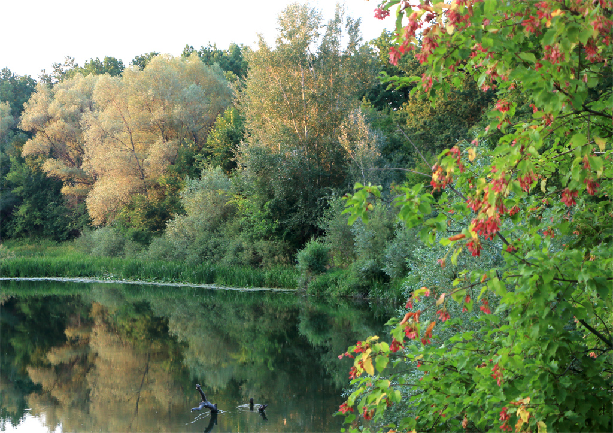
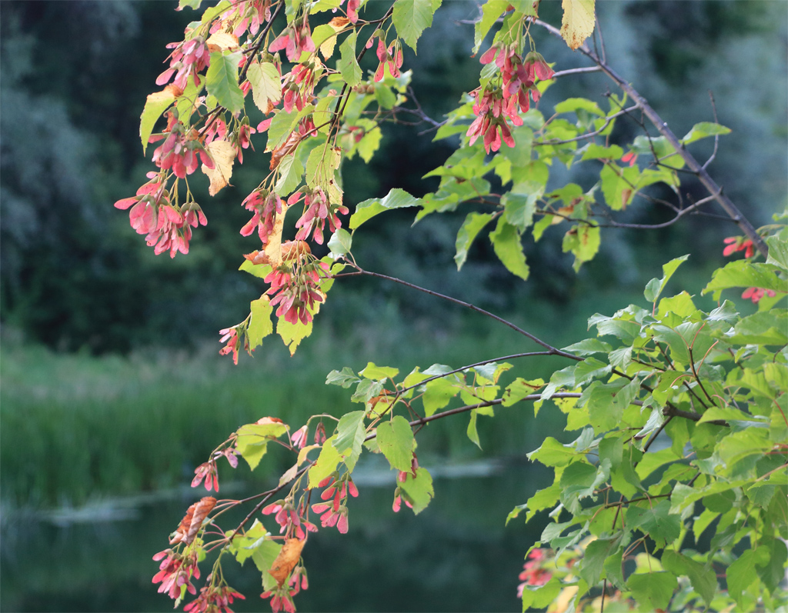
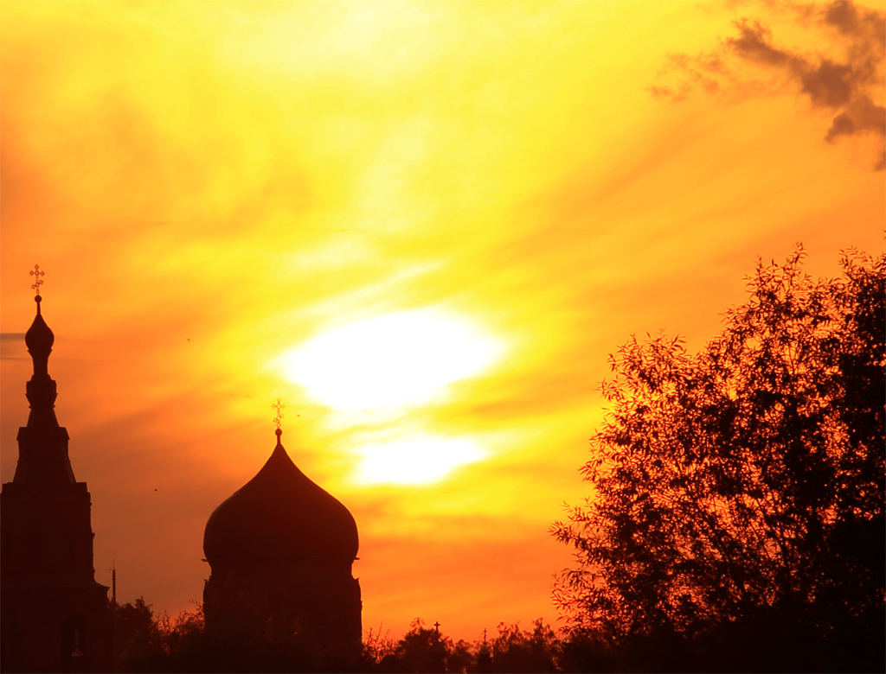
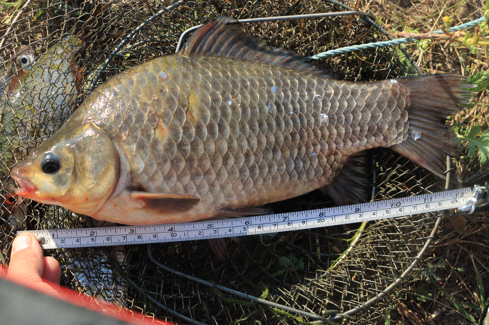
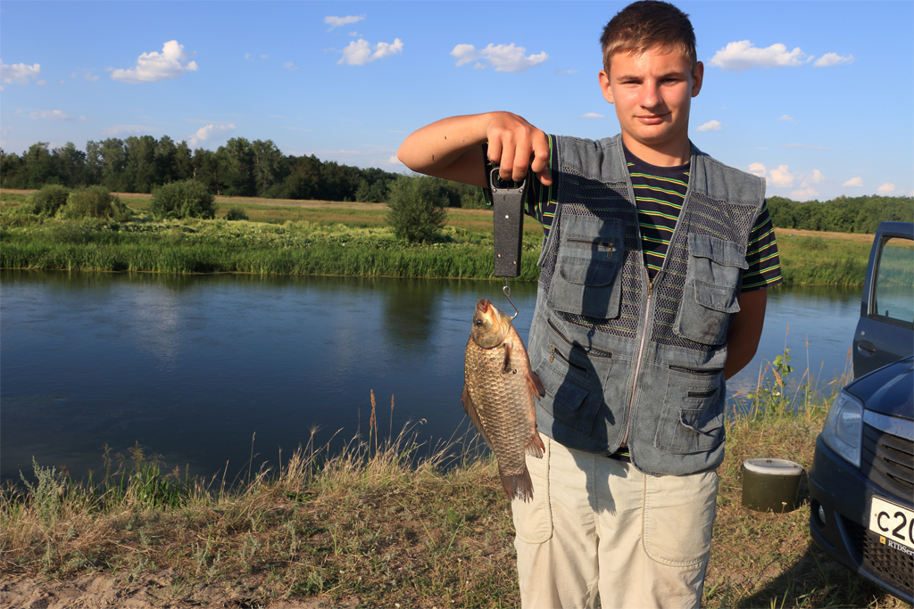
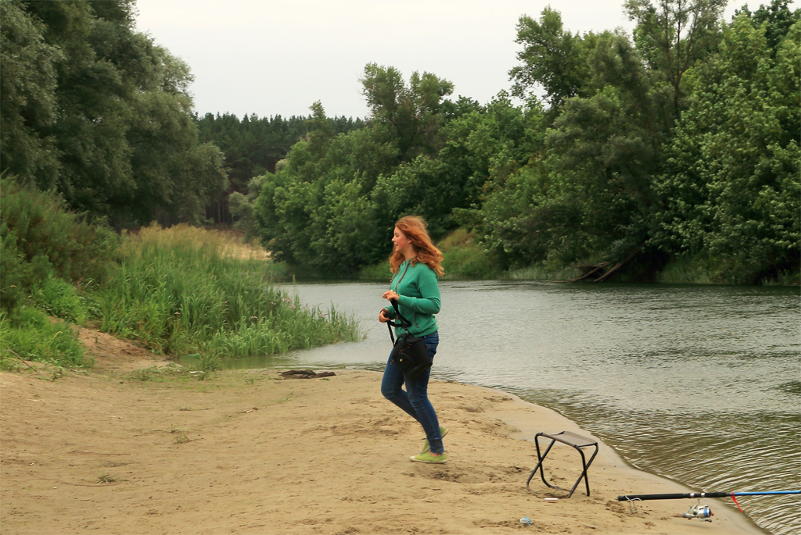

Клен татарский и другие красоты берегов Хопра
Можно прожить еще сто лет, но так и не узнать, что это по-осеннему раскрашенное дерево, в изобилии растущее не берегах Хопра, называется татарским кленом.

Или черным кленом, что совсем уж непонятно. Его ярко-розовые крылатки никак не вяжутся с представлением о черном лесе.

Конечно, если не смотреть на него при закате, когда все краски съедает уставшее за день солнце.

Но клен-кленом, а для нас главное - рыбалка. Надо не только поймать диковинного речного карася. Но и измерить его.

И взвесить.

Впрочем, рыба может и подождать, если неожиданно возникает интересный кадр. Инстинкт художника в этом случае побеждает древнюю тягу к охоте.
